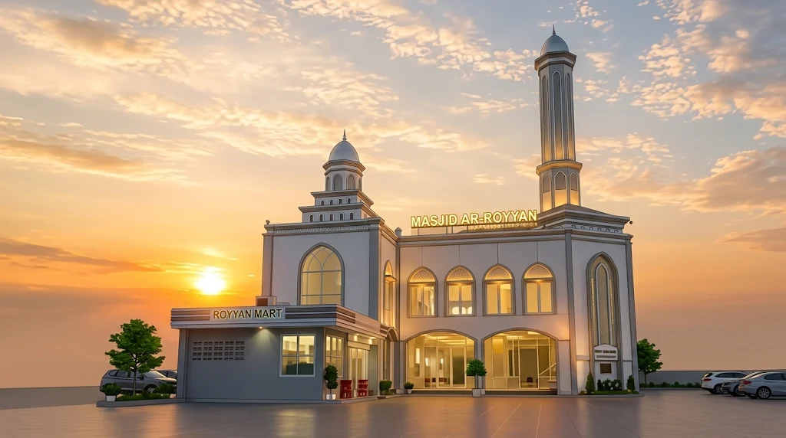

Masjid Ar-Royyan
Muhammadiyah Buduran
Mewujudkan masjid yang makmur, ramah keluarga, serta menjadi wahana dakwah pencerahan dan pembinaan ukhuwah Islamiyah di Kabupaten Sidoarjo.

Tampak Depan Masjid Ar-Royyan
Buduran, Kab. Sidoarjo, Jawa Timur
Profil Singkat Masjid Ar-Royyan
Pusat Ibadah & Pembinaan Umat di Buduran
Masjid Ar-Royyan Muhammadiyah Buduran didirikan sebagai ikhtiar bersama warga dan persyarikatan Muhammadiyah untuk menghadirkan sarana ibadah yang nyaman, tertib, dan inklusif bagi masyarakat sekitar Buduran, Sidoarjo.
Berlandaskan semangat Islam berkemajuan, masjid ini tidak hanya difungsikan untuk pelaksanaan shalat fardhu berjamaah, namun juga menjadi sentra pengajian pemahaman Al-Qur'an dan Sunnah, pendidikan anak-anak melalui TPQ, serta kegiatan sosial kemasyarakatan.
Visi Utama
"Terwujudnya jamaah yang bertauhid murni, berakhlak mulia, cerdas, dan saling tolong-menolong dalam bingkai ukhuwah Islamiyah."
Fasilitas Masjid
Ruang Utama Shalat
Sejuk ber-AC dan karpet bersih.
Tempat Wudhu & Toilet
Terpisah antara ikhwan & akhwat.
Ruang TPQ & Kajian
Tempat belajar santri TPQ.
Parkir Kendaraan
Aman untuk kendaraan roda dua & roda empat.
Jadwal Ibadah & Agenda Kegiatan
Waktu Shalat Wilayah Buduran, Sidoarjo
Agenda & Kajian Rutin Komunitas
Kajian Ahad Pagi
Kajian tematik tafsir Al-Qur'an dan akhlak bersama asatidz Muhammadiyah Sidoarjo. Terbuka untuk umum.
TPQ Ar-Royyan
Pembelajaran baca tulis Al-Qur'an (metode Tajdid), hafalan doa harian, dan dasar-dasar adab Islam untuk anak-anak.
Pengajian Ibu-Ibu 'Aisyiyah
Forum silaturahmi, kajian fiqih keluarga sakinah, dan pembinaan ketahanan keluarga di lingkungan cabang.
Kontak Pengurus, Peta & Media Sosial
Kontak Layanan Takmir
Butuh informasi jadwal kajian, pendaftaran santri TPQ, atau kegiatan komunitas jamaah? Silakan hubungi nomor narahubung resmi berikut:
Media Sosial Resmi
Ikuti dokumentasi kajian dan pengumuman terbaru di platform kami:
Lokasi Masjid
Kecamatan Buduran, Kabupaten Sidoarjo, Jawa Timur